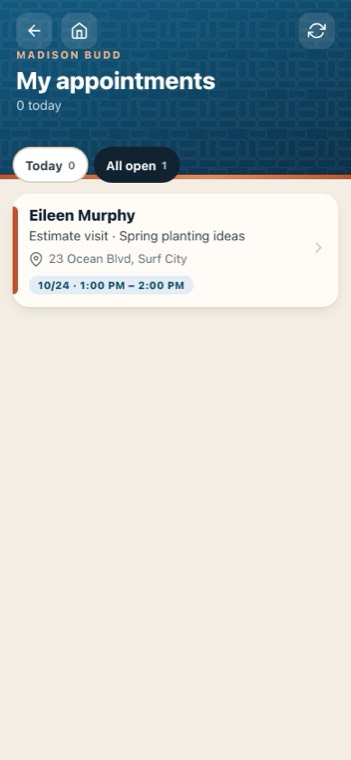
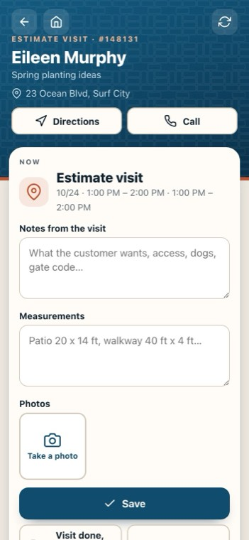
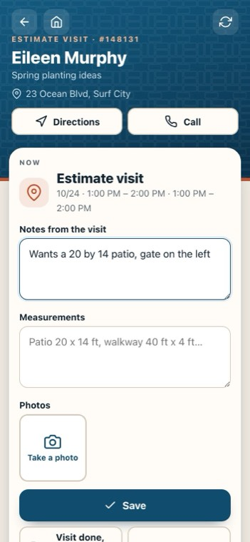
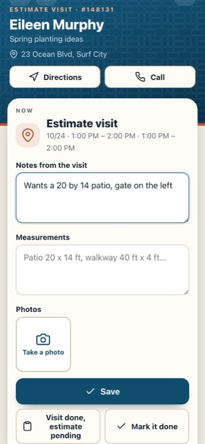
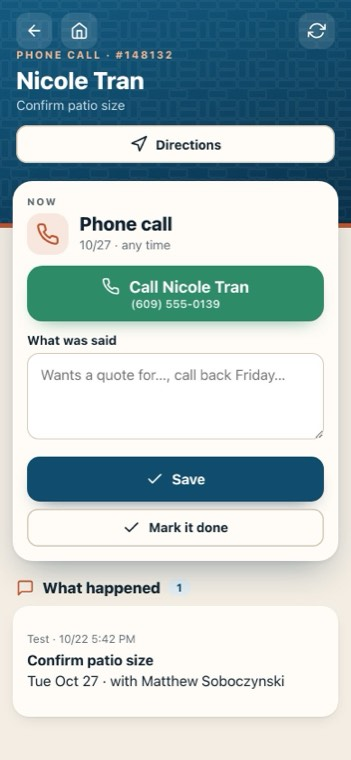

Visits and phone calls on the phone
On the crew phone app: Jersey Shore Pavers — Crew.
-

1My appointments
Visits, call-backs and tasks the office booked for you, today first.
-

2A visit
The customer, what it's for and when, with Directions and Call.
-
 3
3Notes from the visit
What the customer wants, access, the gate code.
-
 4
4Measurements
Write them as you take them.
-

5Photos
The yard and the area to quote. They show in the office straight away.
-
 6
6Save
Everything you saved is on the appointment in the office, for whoever writes the estimate.
-

7Visit done, estimate pending
The office sees the visit is done and the quote is waiting.
-

8A phone call
A call shows one big button with the number. Write what was said, then mark it done.